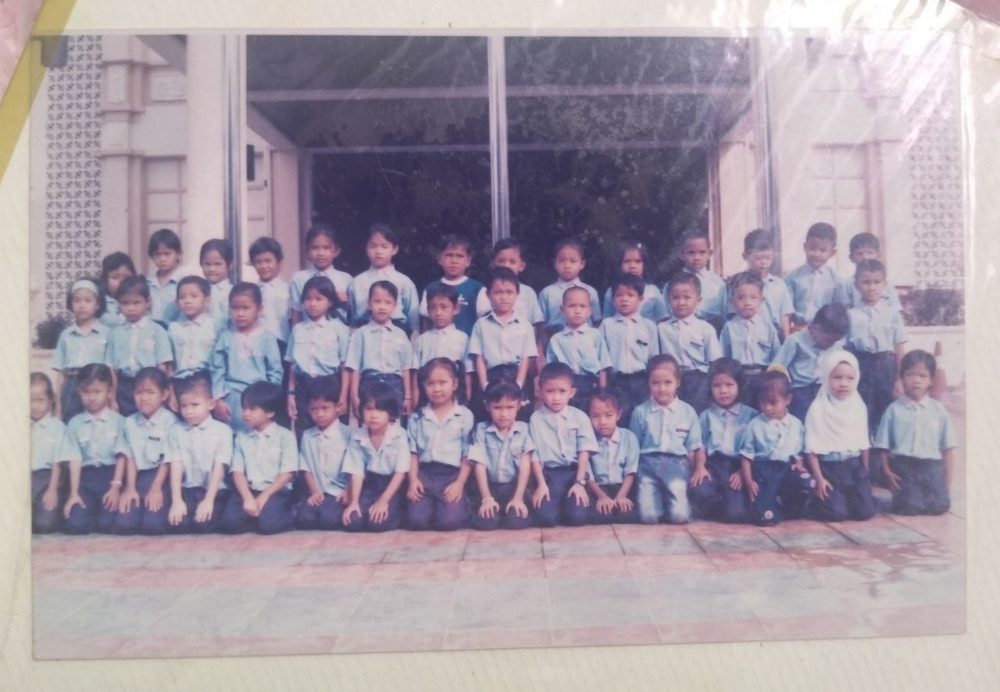

| Name of Institution | Year |
|---|---|
| TABIKA KEMAS | 2006 |
| SK HAJI ISMAIL | 2007-2012 |
| SMK TUN SHARIFAH RODZIAH | 2013-2017 |
| UiTM CAWANGAN KEDAH | 2018-Now |
I start my education at 6 years old at the Tadika Kemas near my house. At that time I was very happy and excited because that was the first time I started my schooling. During my kindergarten, I once represented a nasyid competition between Tadika Kemas Kindergarten and me and the my group members got the number 3. I was very happy and so excited when I won the number 3.

I started my primary school in 2007 until 2012. I got many friends during my primary school. When I was 11 years old, I was joining a dance club handled by teacher Anuar. At that time, I only entered the club to fill my free time only, but after cikug anuar made a selection for participants who will represent the district and state school, I participated in this selection and was selected as one of the dancers who will represent the school. I was so excited because I did not think that I had any talent in the field of dance after being honed and attending dance classes at school. In 2012, I and my group members also represented the state of Kedah to perform in front of the Di-Pertuan Agong and Permaisuri Agong. I was really excited because at that time it was the first time I entered the national palace. These memories I will never forget because for me these are the most unforgettable memories when I was in primary school.
I am currently a Diploma in Information Management student at UiTM Kedah branch and this year is my last year as a diploma student. Diploma in information management is my 3rd choice in UPU. I chose this course because I have no interest in mathematics subjects and indirectly this course has no mathematics subjects. Before selecting courses and universities on the old UPU website, I have already done a little research on the courses to be selected. During my 2 years at UiTM, I went through various memories of love and sorrow. I am so thankful that I can feel all this and not everyone can continue their studies at the diploma level due to financial problems and so on. before entering UiTM, I had already planted the determination to study hard and to prove to my parents and family that I can be the hope of the family. I have received the dean award 3 times during the 4 semesters I have been through. Moreover, during semester 3, my pointer fell off the deck because I got a C in one subject. I feel really sad because I failed to maintain getting a dean list every sem. However, I am thankful that I still passed and did not need to repeat the subject. The most memorable memory I had during this diploma was that we had to study from home because Covid19 that hit the world. studying at home is not like on campus. it requires strong physical and mental energy to get through it. But I am thankful that with the help of my friends and lecturers I was able to win it and get the dean award last semester. I also hope that this last semester I will also receive the dean's award.